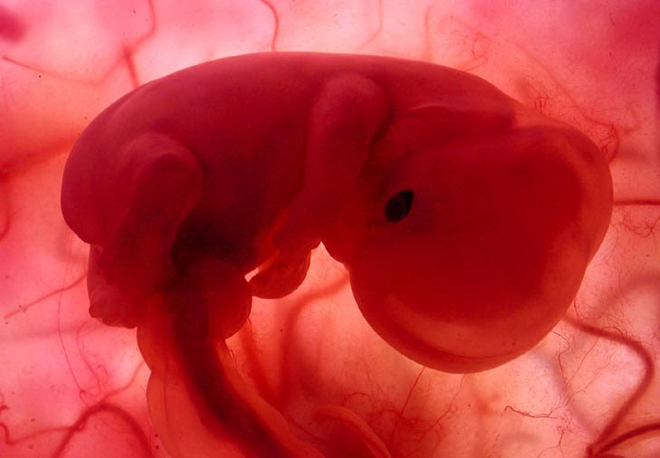

Caracteristias externas del
E M B R I Ó N
3 - 8 semana
Dado a que entre la finalización de la tercera a la octava semana se forman los esbozos de la mayor parte de las estructuras externas e internas esenciales, éste es el periodo más crítico durante el desarrollo. Las alteraciones durante este periodo pueden tener como consecuencias malformaciones congénitas importantes.
Embriologia Clínica 9a edición, Keith L. Moore, T.V.N. Persaud, Mark G. Torchia